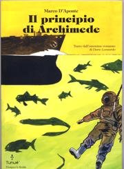

Il Principio di Archimede

Graphic novel di Marco D’Aponte
Edizioni Tunuè 2011.“Un cargo, una Leica, un allievo di macchina e il suo capitano, l’ombra di un sospetto.
L’avventura di un viaggio sospeso fra terra e mare, superficie e profondità, apparenza e verità.
Il romanzo di formazione di un eclettico fotografo scrittore.”
Editore: Edizioni Tunuè
Anno: 2011